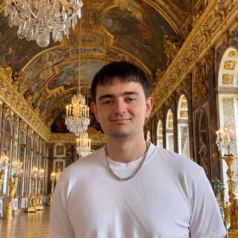

Mentors
Meet the mentors of SIRA’s fellowship. We add mentors as they confirm.
Summer 2027
-

Alex CsakyAstra Fellow, Constellation
-
Muhua Huang
PhD Student, Stanford Graduate School of Business
-
Roshni Lulla
Co-Founder and Head of Research, Institute for Humane Robotics
-
Pranav Mahajan
Postdoctoral Researcher, University of Oxford
No mentors match.
Mentor with SIRA Guide a social scientist through a 12-week AI resilience and safety project.
Offer to mentor